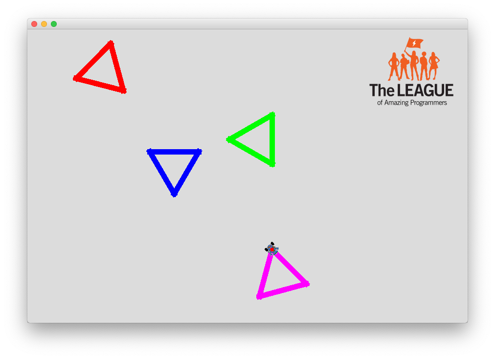

Robot Color Chooser

Goal:
Use if and else if statements to set a Robot's pen to a chosen color before drawing a shape.
Steps:
- Ask the user to choose a color.
- Set the Robot's pen to the chosen color.
- Have the Robot draw a shape.
- Repeat the above in a loop to test all the supported colors.
- Don't forget to use an else statement in case the user enters an unrecognized color.